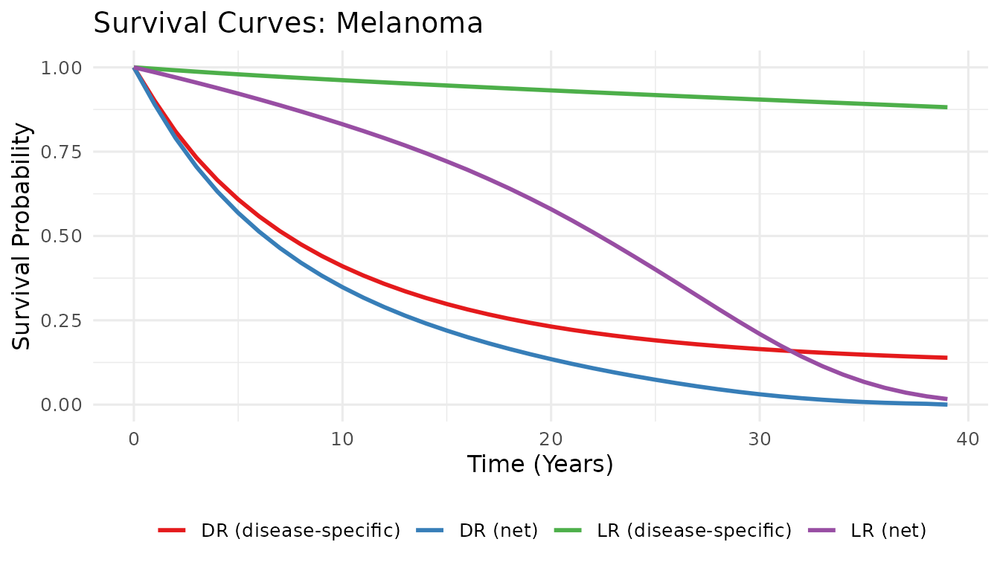

Introduction to seerSurv: Cancer Recurrence Transition Probabilities
Sameer Mansoori, Shubhram Pandey, Rashi Rani, Barinder Singh, Murat Kurt
2026-03-20
Source:vignettes/seerSurv-intro.Rmd
seerSurv-intro.RmdBackground
State-transition health economic models of early-stage cancers often include a local/regional recurrence (LR) state that sits between the disease-free state and distant recurrence (DR) or death. Populating such a model requires three monthly transition probabilities from LR:
| Transition | Symbol |
|---|---|
| Remain in LR | |
| Progress to DR | |
| Die while in LR |
Trial-derived estimates are rarely available because clinical studies are typically powered for overall or disease-free survival, and LR follow-up is too short to observe the full recurrence cascade.
seerSurv fills this gap by deriving the three probabilities from aggregate (population-level) survival data extracted from the SEER-17 registry, covering ten cancer types.
Methodological overview
Pseudo-IPD construction — Aggregate survival proportions at years 0–5 are converted to pseudo-individual patient data (
prep_ipd()).Parametric modelling — Six distributions (exponential, Weibull, Gompertz, log-logistic, log-normal, gamma) are fitted to the pseudo-IPD using weighted maximum likelihood via
flexsurv(fit_models()).Model averaging — The top- distributions by AIC or BIC receive relative-likelihood weights; the final curve is a convex blend (
compute_weights(),blend_survival()).Background mortality adjustment — Disease-specific survival is multiplied by age- and sex-specific background survival from the US-CDC life-table to obtain net (all-cause) survival (
make_background_surv()).Sojourn time and — The mean LR sojourn time (months) equals the area difference between the net LR and net DR curves. solves .
Convolution for — The modelled LR survival is approximated as the sum of patients still in LR and those who have transitioned to DR. is estimated by least-squares (
run_tumour_analysis()).
Quickstart: single tumour type
library(seerSurv)
library(dplyr)
data(lifetable_seer)
# Five-year SEER-17 survival proportions — Melanoma
s_lr <- c(1, 0.9959, 0.9886, 0.9831, 0.9783, 0.9754)
s_dr <- c(1, 0.5491, 0.4396, 0.3945, 0.3630, 0.3410)
result <- run_tumour_analysis(
tumour = "Melanoma",
surv_vec_LR = s_lr,
surv_vec_DR = s_dr,
N_L = 64775L,
N_D = 3121L,
prop_male_LR = 0.580,
mean_age_LR = 61,
prop_male_DR = 0.692,
mean_age_DR = 62,
lifetable = lifetable_seer,
scenario = "lifetime",
criterion = "AIC"
)
knitr::kable(result, digits = 5,
caption = "Monthly transition probabilities — Melanoma (lifetime, AIC)")| P_LL | P_DL_approach2 | P_Death_L_approach2 | RMST_L_years | RMST_D_years | M_years | M_months |
|---|---|---|---|---|---|---|
| 0.99336 | 0.00659 | 0.00005 | 21.1512 | 9.1799 | 11.9713 | 143.6556 |
Step-by-step walkthrough
Step 2: Fit parametric models
mods_L <- fit_models(ipd_L[-1, ]) # drop time = 0 row
mods_D <- fit_models(ipd_D[-1, ])
names(mods_L)
#> [1] "exp" "weibull" "gompertz" "llogis" "lnorm" "gamma"Step 3: Compute AIC-based weights
ic_L <- extract_ic(mods_L, "AIC")
wts_L <- compute_weights(ic_L, top_k = 3, criterion = "AIC")
wts_L
#> # A tibble: 3 × 4
#> model weight ic criterion
#> <chr> <dbl> <dbl> <chr>
#> 1 exp 0.576 2.27 AIC
#> 2 lnorm 0.212 4.26 AIC
#> 3 gompertz 0.212 4.26 AICStep 4: Blend survival curves
grid <- seq(0, 39, by = 1) # 39-year lifetime horizon from age 61
S_blend_L <- blend_survival(mods_L, wts_L, grid)
#> New names:
#> • `surv` -> `surv...1`
#> • `surv` -> `surv...2`
#> • `surv` -> `surv...3`
head(S_blend_L)
#> # A tibble: 6 × 2
#> time surv
#> <dbl> <dbl>
#> 1 0 1
#> 2 1 0.996
#> 3 2 0.991
#> 4 3 0.987
#> 5 4 0.983
#> 6 5 0.979Step 5: Adjust for background mortality
lt <- lifetable_seer |>
mutate(
btrate_LR = Males * 0.580 + Females * 0.420,
btrate_DR = Males * 0.692 + Females * 0.308
)
B_LR <- make_background_surv(lt, mean_age = 61, rate_col = "btrate_LR",
time_grid_years = grid)
B_DR <- make_background_surv(lt, mean_age = 62, rate_col = "btrate_DR",
time_grid_years = grid)
head(B_LR)
#> # A tibble: 6 × 2
#> time surv
#> <dbl> <dbl>
#> 1 0 1
#> 2 1 0.990
#> 3 2 0.979
#> 4 3 0.967
#> 5 4 0.955
#> 6 5 0.942Step 6: Visualise
ic_D <- extract_ic(mods_D, "AIC")
wts_D <- compute_weights(ic_D, top_k = 3, criterion = "AIC")
S_blend_D <- blend_survival(mods_D, wts_D, grid)
#> New names:
#> • `surv` -> `surv...1`
#> • `surv` -> `surv...2`
#> • `surv` -> `surv...3`
U_L <- left_join(S_blend_L, B_LR, by = "time") |>
mutate(surv = surv.x * surv.y) |> select(time, surv)
U_D <- left_join(S_blend_D, B_DR, by = "time") |>
mutate(surv = surv.x * surv.y) |> select(time, surv)
plot_survival_curves(S_blend_L, S_blend_D, U_L, U_D, tumour = "Melanoma")
Blended and net survival curves — Melanoma
Multi-tumour analysis using bundled data
data(tumour_data_seer)
results_multi <- tumour_data_seer |>
group_by(Tumor) |>
summarise(
out = list(
run_tumour_analysis(
tumour = first(Tumor),
surv_vec_LR = c(S0[Recurrence == "LR"], S1[Recurrence == "LR"],
S2[Recurrence == "LR"], S3[Recurrence == "LR"],
S4[Recurrence == "LR"], S5[Recurrence == "LR"]),
surv_vec_DR = c(S0[Recurrence == "DR"], S1[Recurrence == "DR"],
S2[Recurrence == "DR"], S3[Recurrence == "DR"],
S4[Recurrence == "DR"], S5[Recurrence == "DR"]),
N_L = first(N_LR),
N_D = first(N_DR),
prop_male_LR = prop_male[Recurrence == "LR"],
mean_age_LR = mean_age[Recurrence == "LR"],
prop_male_DR = prop_male[Recurrence == "DR"],
mean_age_DR = mean_age[Recurrence == "DR"],
lifetable = lifetable_seer,
scenario = "lifetime",
criterion = "AIC"
)
),
.groups = "drop"
) |>
tidyr::unnest(out)
knitr::kable(
results_multi |> select(Tumor, P_LL, P_DL_approach2, P_Death_L_approach2,
M_months),
digits = 5,
caption = "Monthly transition probabilities across 11 cancer types (lifetime, AIC)"
)| Tumor | P_LL | P_DL_approach2 | P_Death_L_approach2 | M_months |
|---|---|---|---|---|
| Bladder | 0.99101 | 0.00892 | 0.00007 | 108.79987 |
| Breast | 0.99519 | 0.00474 | 0.00006 | 185.87608 |
| Colon & Rectum | 0.99377 | 0.00619 | 0.00004 | 152.09926 |
| Esophageal | 0.98020 | 0.01974 | 0.00006 | 50.54718 |
| Kidney | 0.99419 | 0.00574 | 0.00008 | 160.60925 |
| Liver | 0.97702 | 0.02291 | 0.00007 | 43.48845 |
| Lung | 0.98460 | 0.01532 | 0.00008 | 64.85504 |
| Melanoma | 0.99336 | 0.00660 | 0.00005 | 143.60317 |
| Ovarian | 0.99288 | 0.00706 | 0.00005 | 136.40131 |
| Pancreatic | 0.96900 | 0.03094 | 0.00006 | 32.25437 |
| Stomach | 0.98993 | 0.01003 | 0.00004 | 98.20475 |
Sensitivity analysis: time horizons and model-selection criteria
scenarios <- c("lifetime", "20y", "5y")
criteria <- c("AIC", "BIC")
sens_grid <- expand.grid(scenario = scenarios, criterion = criteria,
stringsAsFactors = FALSE)
sens_results <- lapply(seq_len(nrow(sens_grid)), function(i) {
run_tumour_analysis(
tumour = "Melanoma",
surv_vec_LR = s_lr,
surv_vec_DR = s_dr,
N_L = 64775L,
N_D = 3121L,
prop_male_LR = 0.580,
mean_age_LR = 61,
prop_male_DR = 0.692,
mean_age_DR = 62,
lifetable = lifetable_seer,
scenario = sens_grid$scenario[i],
criterion = sens_grid$criterion[i]
) |>
mutate(scenario = sens_grid$scenario[i],
criterion = sens_grid$criterion[i])
})
sens_df <- bind_rows(sens_results) |>
select(scenario, criterion, P_LL, P_DL_approach2, P_Death_L_approach2)
knitr::kable(sens_df, digits = 5,
caption = "Sensitivity analysis — Melanoma across scenarios and criteria")| scenario | criterion | P_LL | P_DL_approach2 | P_Death_L_approach2 |
|---|---|---|---|---|
| lifetime | AIC | 0.99336 | 0.00659 | 0.00005 |
| 20y | AIC | 0.99076 | 0.00917 | 0.00008 |
| 5y | AIC | 0.91780 | 0.08214 | 0.00006 |
| lifetime | BIC | 0.99278 | 0.00716 | 0.00005 |
| 20y | BIC | 0.99004 | 0.00988 | 0.00008 |
| 5y | BIC | 0.92011 | 0.07983 | 0.00005 |
Interpreting the outputs
| Column | Interpretation |
|---|---|
P_LL |
Per-month probability of remaining in LR state |
P_DL_approach2 |
Per-month probability of progressing from LR to DR |
P_Death_L_approach2 |
Per-month probability of dying while in LR |
RMST_L_years |
Restricted mean survival time — LR population (net, years) |
RMST_D_years |
Restricted mean survival time — DR population (net, years) |
M_years / M_months
|
Mean sojourn time in LR state |
These probabilities can be plugged directly into a Markov cohort model or a partitioned survival model that includes an LR health state.
References
Mansoori S, Pandey S, Rani R, Singh B, Kurt M (2025). “Deriving Cancer Progression Rates After Local/Regional Recurrence Using Aggregate Survival Data: An R Package for Health Economic Evaluations.” Value in Health (submitted).
SEER Program. National Cancer Institute. https://seer.cancer.gov/.
Jackson C (2016). “flexsurv: A Platform for Parametric Survival Modelling in R.” Journal of Statistical Software, 70(8), 1–33. doi:[10.18637/jss.v070.i08](https://doi.org/10.18637/jss.v070.i08).